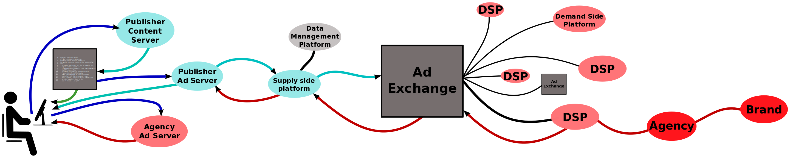

Click Through Rate Analysis using Spark
Introduction
In recent years, programmatic advertising is been taking over the online advertisement industry. To enable automatic selling and purchasing ad impressions between advertisers and publishers through real-time auctions, Real-Time Bidding (RTB) is quickly becoming the leading method.
In contrast to the traditional online ad market, where a certain amount of impressions is sold at a fixed rate, RTB allows advertisers to bid each impression individually in real time at a cost based on impression-level features. Real-time Bidding (RTB) is a way of transacting media that allows an individual ad impression to be put up for bid in real-time. This is done through a programmatic on-the-spot auction, which is similar to how financial markets operate. RTB allows for Addressable Advertising; the ability to serve ads to consumers directly based on their demographic, psychographic, or behavioral attributes.
Many DSPs (Demand Side Platforms) act as agents for the advertisers and take part in the real-time auction on behalf of them. In order to enable real-time bidding and provide the advertisers with the clicks at the lowest price possible, DSPs develop their own machine learning algorithms using techniques such as hashing trick, feature combinations, stochastic gradient descent etc.
Motivation
Like the standard practice in most of the data science use cases, whenever a new algorithm is developed, they are put into A/B test against the already existing algorithm in the production (atleast for few days) in order to do determine which algorithm suits the business metrics better.
Due to the huge volume of bid requests (around a million bid requests per second), the amount of data collected during AB is in the order of 100 GBs. Python's Pandas library has basically all the functionality needed to do the offline analysis of the data collected in terms of CPCs, spend, clicks, CTR, AUC etc.
But, Pandas has a huge problem, it has to load all the dataset in memory in order to run some computations on it. From my experience, Pandas needs the RAM size to be 3 times the size of the dataset and it can not be run into a distributed environment as cluster of machines. This is where Apache Spark is useful as it can process the datasets whose size is more than the size of the RAM. This blog will not cover the internals of Apache Spark and how it works rather I will jump to how the Pandas CTR Analysis code can be easily converted into spark analysis with few syntax changes.
Migrating to Spark from Pandas
In new versions, Spark started to support Dataframes which is conceptually equivalent to a dataframe in R/Python. Dataframe support in Spark has made it comparatively easy for users to switch to Spark from Pandas using a very similar syntax. In this section, I would jump to coding and show how the CTR analysis that is done in Pandas can be migrated to Spark.
Pictographically, the RTB ecosystem can be represented as:

References
[2].Parameter estimation: the build_loss_objective #5
[3].Robust and efficient parameter estimation in dynamic models of biological systems
[4].Parameter Estimation for Differential Equations: A Generalized Smoothing Approach
[5].Stan: A probabilistic programming language for Bayesian inference and optimization